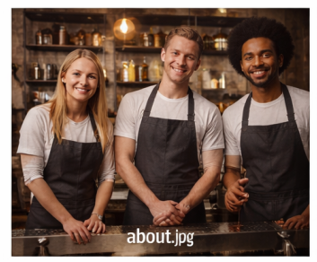

Our Specialties

Kitfo
Minced raw beef seasoned with mitmita and clarified butter
250 ETBTaste of Ethiopia & Beyond
Founded by kingfillari, KFSphere brings the best of Ethiopian cuisine and international favorites to Bole, Addis Ababa. We use fresh, locally sourced ingredients and traditional recipes passed down through generations.
Our mission is to create a welcoming space where friends, families, and travelers can enjoy delicious food, exceptional coffee, and unforgettable moments.
Authentic Ethiopian injera & wot
Freshly roasted Ethiopian coffee
Vegetarian & vegan options
Outdoor seating & free Wi‑Fi

Minced raw beef seasoned with mitmita and clarified butter
250 ETB"The best restaurant in Bole! The kitfo is amazing and the coffee ceremony is a must‑try."
"Warm atmosphere, friendly staff, and delicious food. Highly recommended."
"Great place for dinner with friends. The tibs are superb!"
Bole, near Edna Mall, Addis Ababa, Ethiopia
+251 911 123 456
hello@kfsphere.com
Mon–Sat: 10am – 11pm, Sun: 12pm – 10pm
WhatsApp Us